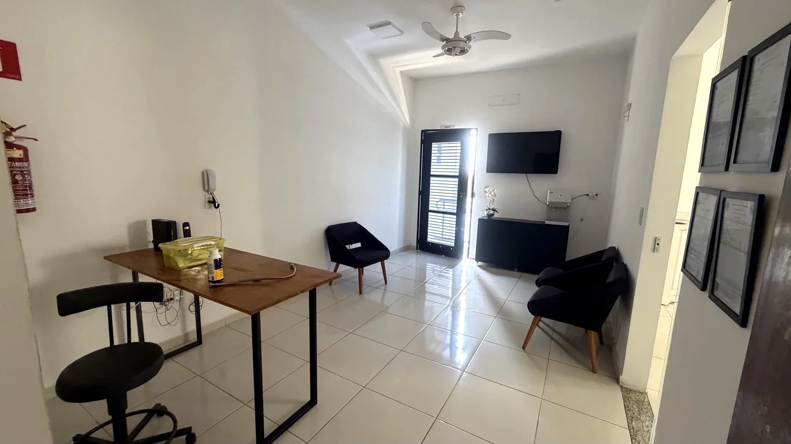
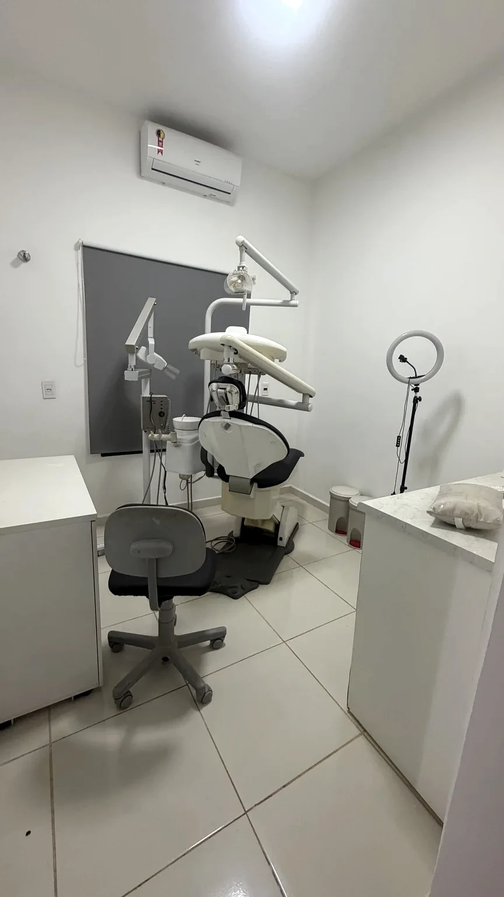
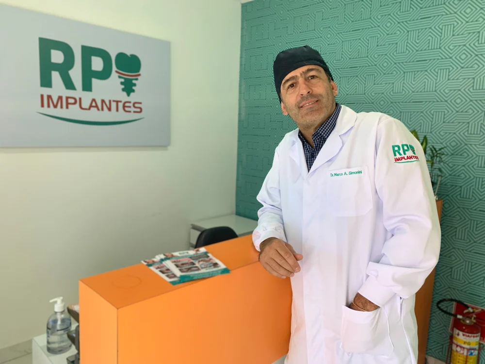
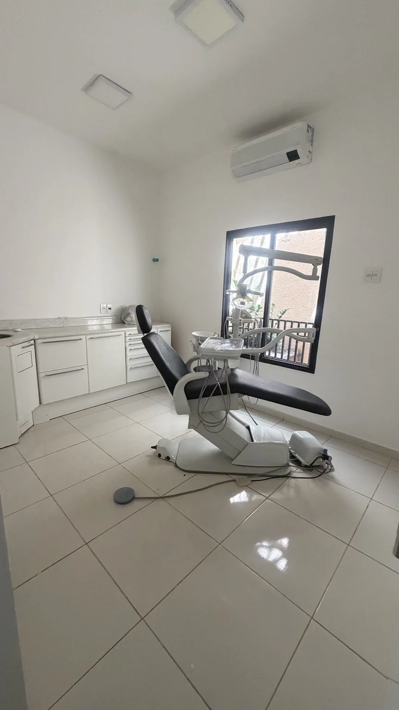
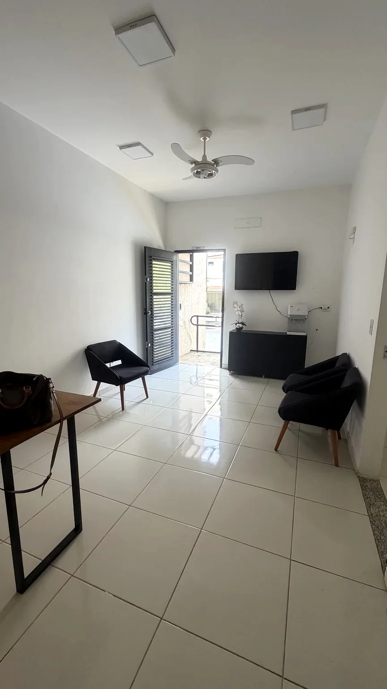
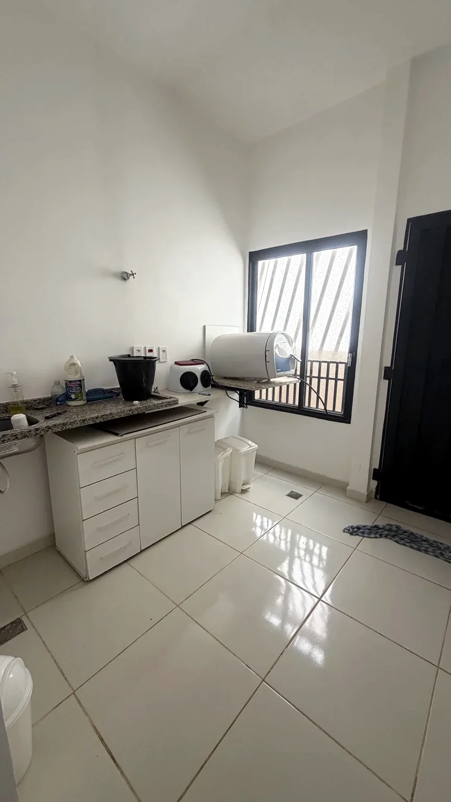

✦
Implantes e próteses dentárias
Alternativas para reabilitação oral e reposição de dentes, conforme avaliação e planejamento.
A RP Implantes chega a Higienópolis com atendimento em diferentes áreas da odontologia, planejamento individualizado e atenção às necessidades de cada paciente.
Converse com nossa equipe e saiba como podemos cuidar do seu sorriso.


A RP Implantes amplia sua presença em São José do Rio Preto com uma unidade no bairro Higienópolis. Nosso compromisso é oferecer atendimento odontológico com escuta, orientação clara e planejamento adequado a cada caso.
Na avaliação, nossa equipe conversa com você, entende suas necessidades e orienta sobre as possibilidades de tratamento.
Agende sua avaliação sem compromissoConheça algumas das áreas de atendimento da RP Implantes. A indicação de cada procedimento depende de avaliação clínica individual.
Alternativas para reabilitação oral e reposição de dentes, conforme avaliação e planejamento.
Cuidados e procedimentos voltados à harmonia do sorriso e à saúde bucal.
Tratamento endodôntico para cuidar da parte interna do dente, quando indicado.
Cuidados preventivos e acompanhamento da saúde dos dentes e gengivas.
Avaliação e acompanhamento para correção do posicionamento dos dentes e da mordida.
Procedimentos realizados quando necessários, após avaliação profissional.
Estamos atualizando os credenciamentos para esta unidade. Fale com nossa equipe para confirmar se o seu convênio já está disponível e quais procedimentos possuem cobertura.

O Dr. Marco é o responsável técnico da unidade RP Implantes Higienópolis. A condução dos atendimentos considera a avaliação clínica, as necessidades individuais e o planejamento de cada tratamento.
CRO 102.781Veja alguns ambientes da RP Implantes Higienópolis.



Endereço
R. Abrão Thomé, 962 – Higienópolis
São José do Rio Preto – SP, 15085-400
Telefone e WhatsApp
(17) 3353-8352
Entre em contato para consultar horários e agendar sua avaliação.
Ver localização no Google Maps ↗É só chamar nossa equipe pelo WhatsApp ou telefone (17) 3353-8352. Vamos orientar você sobre os horários disponíveis.
Não. A avaliação é uma oportunidade para conversar sobre suas necessidades, receber orientação e conhecer as possibilidades de tratamento. A decisão é sua.
Os credenciamentos estão em atualização para esta unidade. Entre em contato para confirmar se o seu convênio já está disponível e verificar a cobertura do procedimento desejado.
A clínica divulga atendimento em implantes e próteses dentárias, estética dental, tratamento de canal, limpeza e prevenção, ortodontia e extrações. A indicação depende de avaliação clínica.
Agende sua avaliação sem compromisso na RP Implantes Higienópolis. Nossa equipe está pronta para orientar você.
Falar com a equipe pelo WhatsApp